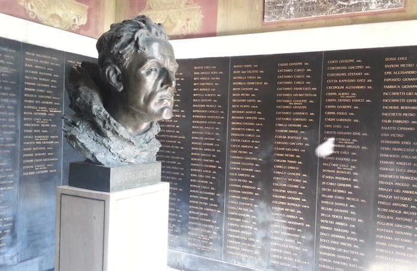
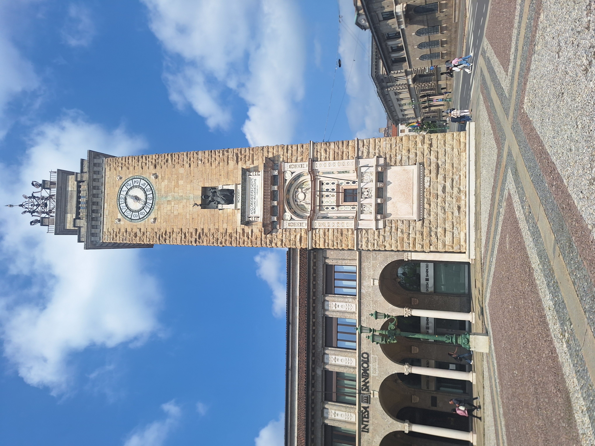
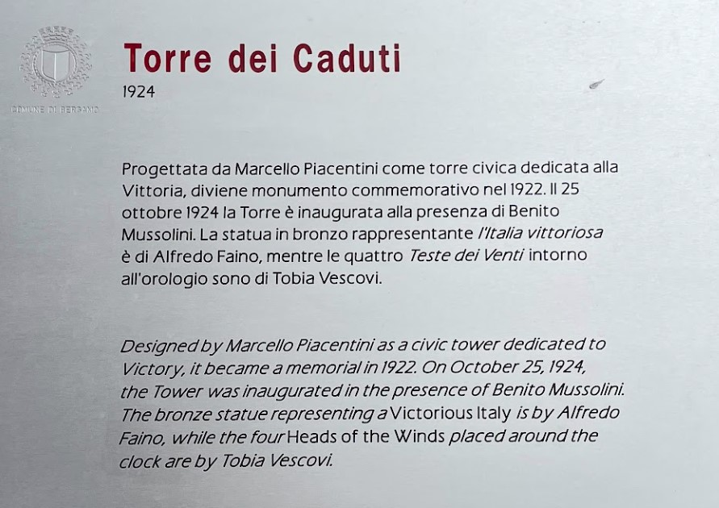
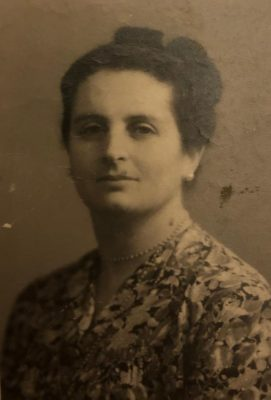
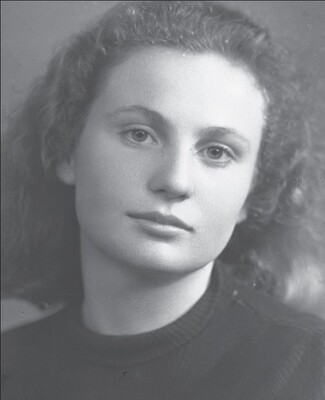
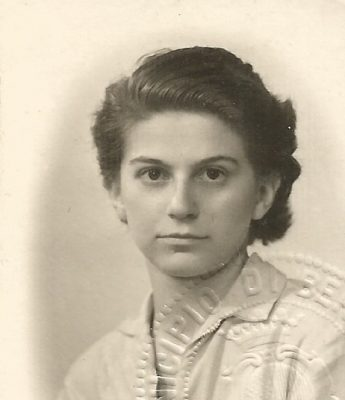
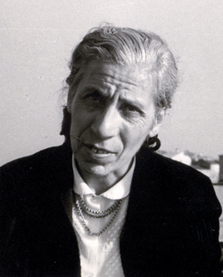
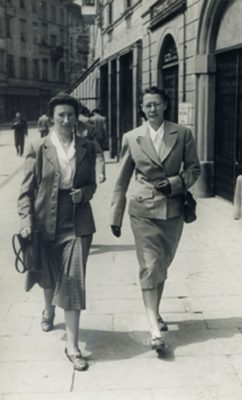
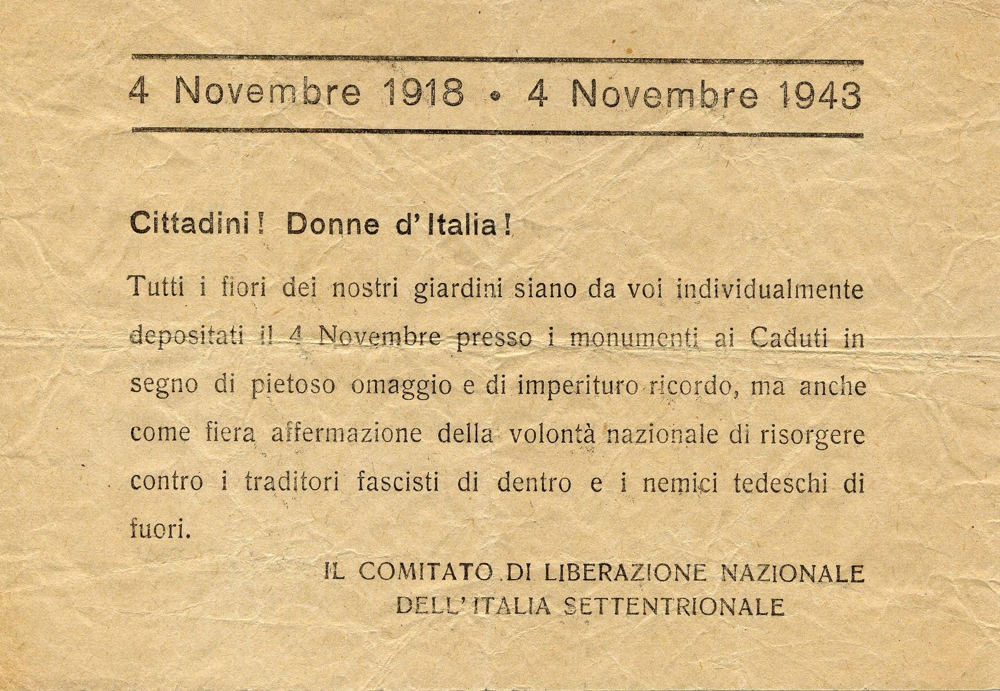
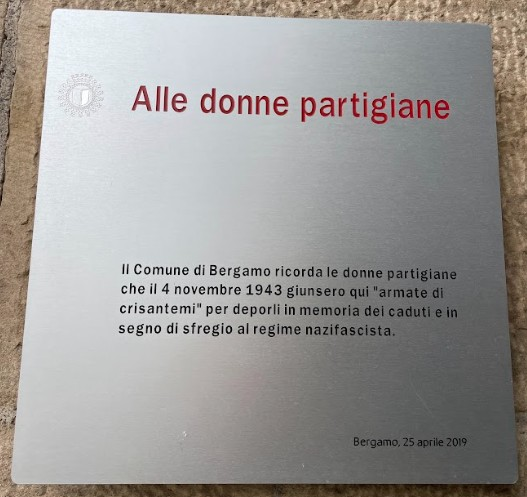

Contesto storico
Ci troviamo ora nel cuore della città bassa, uno spazio che assume un ruolo centrale nello sviluppo urbano e nella vita pubblica di Bergamo nel corso del Novecento. Agli inizi del secolo, infatti, su progetto dell’architetto Marcello Piacentini, la vita cittadina inizia progressivamente a spostarsi dalla città alta verso l’area in cui ci troviamo oggi.
La piazza assume un forte valore simbolico e civile, diventando il luogo privilegiato per celebrazioni, manifestazioni e momenti di aggregazione pubblica. A partire dal 1921, viene ufficialmente intitolata a Vittorio Veneto , assumendo il significato di spazio dedicato al ricordo dei caduti bergamaschi della Prima guerra mondiale e diventando un importante luogo della memoria collettiva.
🎧 Audio Lettura
La piazza prende il nome dalla battaglia di Vittorio Veneto (24 ottobre – 4 novembre 1918), che segnò la vittoria finale dell’Italia sull’Impero austro-ungarico nella Prima guerra mondiale. Questo evento fu considerato decisivo per la conclusione del conflitto e divenne un simbolo di sacrificio, eroismo e unità nazionale.
Perché è un luogo della memoria
il 27 ottobre 1924, giorno precedente all’anniversario della marcia su Roma, Benito Mussolini inaugura la torre che ancora oggi domina la piazza, trasformandola in un vero e proprio monumento celebrativo del regime. Durante l'evento tengono un discorso, oltre al Duce, anche Antonio Locatelli e Giacomo Suardo , figure di primo piano del fascismo locale e nazionale. Nel 1936, in seguito alla disfatta in Africa Orientale, vengono incisi sulla torre i nomi di otto caduti, tra i quali compare anche quello dello stesso Locatelli , rafforzando ulteriormente il legame tra il monumento e la retorica fascista del sacrificio e dell’eroismo.
Giacomo Suardo fu una delle principali figure del fascismo a Bergamo. Ricoprì il ruolo di segretario federale del Partito Nazionale Fascista in ambito locale ed era anche parlamentare, rappresentando il collegamento tra il potere fascista locale e quello nazionale.
Dentro la torre è presente anche un ritratto scultureo in suo onore

Tuttavia, il significato della torre e della piazza muta nel corso degli anni, soprattutto dopo l’8 settembre 1943. Il 25 luglio 1943, in seguito al tentativo di liberazione antifascista, dalla torre prendono la parola Ernesto Rossi , Luigi Bruno e Mario Mammuccari, segnando simbolicamente una rottura con il passato regime. Il 4 novembre 1943, un gruppo di donne decide di manifestare il proprio dissenso nei confronti dei nazifascisti attraverso un gesto semplice ma fortemente simbolico: la deposizione e il lancio di fiori ai piedi della torre. Avvenuta la liberazione tra il 25 e il 28 aprile 1945, le formazioni partigiane, invece di parlare dal balcone della torre come aveva fatto il Duce, scelgono consapevolmente di allestire un palco rialzato in questa piazza, collocandosi quasi sullo stesso livello del popolo. Questo gesto sottolinea la volontà di rompere con la retorica autoritaria del regime e di affermare un nuovo rapporto tra cittadini e potere, fondato sulla partecipazione e sulla vicinanza. Ancora oggi piazza Vittorio Veneto rappresenta un luogo simbolico per le manifestazioni democratiche, tra cui il 25 aprile (Festa della Liberazione) e il 4 novembre (Festa delle Forze Armate), che si concludono proprio in questa piazza.
politico e intellettuale antifascista, tra i principali fondatori del Partito d’Azione; durante il regime fascista si oppose attivamente a Mussolini e, dopo l’8 settembre 1943, partecipò attivamente alla Resistenza e alla promozione dei valori democratici.
🎧 Audio Lettura
Contenuti multimediali


Approfondimento - "La battaglia dei crisantemi"
Il 4 novembre 1943 un gruppo di donne bergamasche compì un gesto simbolico di grande coraggio e protesta contro il regime fascista. Le donne – tra cui Adriana De Leidi, Mary Tadini Leidi , Mimma Quarti , Velia Sacchi , Bianca Artifoni , Pina Callegari, Iginia e Emma Coggiola – si recarono sotto la torre di piazza Vittorio Veneto per deporre dei fiori in memoria dei caduti della Grande Guerra.





Giorno che ricorda la vittoria italiana nella Prima guerra mondiale
La polizia tentò di impedire la deposizione dei fiori, proteggendo la torre; le donne reagirono con determinazione, lanciando i fiori sopra le teste degli agenti, trasformando così un gesto di commemorazione in un atto di dissenso pubblico e simbolico verso il regime fascista.
L’anno successivo, lo stesso gesto venne ripetuto grazie all’organizzazione del Partito Comunista Italiano (PCI), dimostrando come la protesta femminile a Bergamo fosse ormai parte di un più ampio movimento antifascista cittadino.
Per ricordare questo importante episodio, che unisce memoria dei caduti e resistenza civile, Bergamo ha affisso una targa commemorativa all’interno della torre in piazza Vittorio Veneto, permettendo ancora oggi ai cittadini e ai visitatori di conoscere il coraggio di quelle donne che sfidarono apertamente l’autorità fascista con un gesto semplice ma potente.
🎧 Audio Lettura


Fonti
Fonti bibliografiche
- Mario Pelliccioli, Itinerari di memoria. Un percorso a Bergamo tra fascismo, occupazione tedesca e Resistenza, Moltefedi Achille Grandi Editore, Bergamo 2023
- Angelo Bendotti, I conquistatori dell'impero. Tre vie, una piazza e un passaggio, Il filo di Arianna, Bergamo 2017.
- Angelo Del Boca, Gli Italiani in Africa orientale, vol. III, Laterza, Bari 1982
Fonti multimediali
- Immagine 1: Archivio fotografico del progetto, classe 5IG Itis P. Paleocapa
- Immagine: Museo Storie Bergamo
- Immagine: Modificata con AI
- Immagine: Statua Locatelli
- Image: Invito
- Donna 1: Mary Tadini - ISREC Memoria Urbana
- Donna 2: Velia Sacchi - ISREC Memoria Urbana
- Immagine donna 3: Mimma Quarti, tratta da è l'idea che fa il coraggio. Prospettive femminili sulla Resistenza bergamsca a cura di Elisabetta Ruffini, ISREC Bergamo.
- Donna 4: Bianca Artifoni
- Donne 5: Emma e Iginia Coggiola - ISREC Memoria Urbana